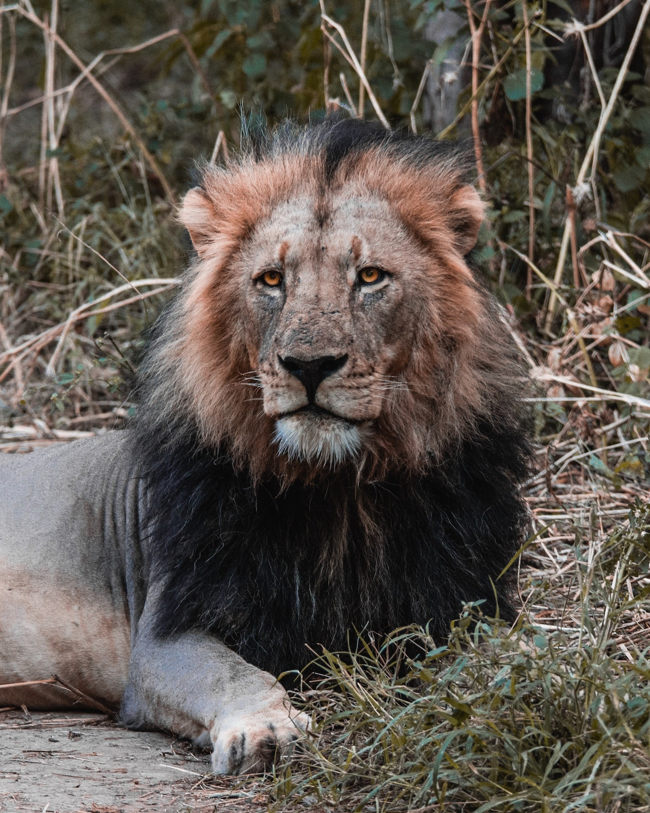
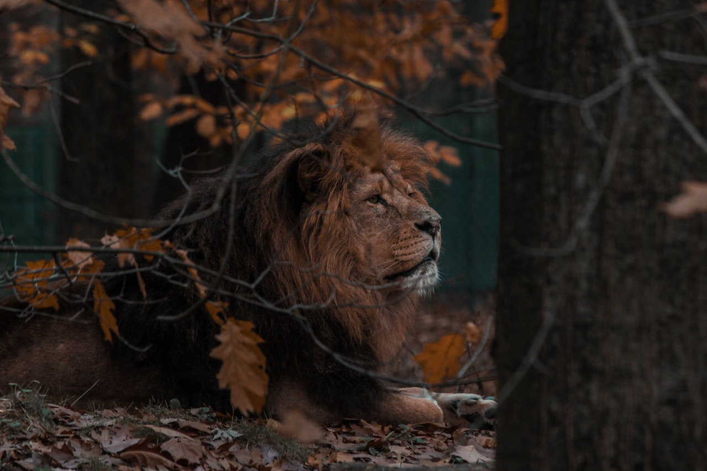

Leão
da família felidaeO leão é um animal carnívoro que faz parte da família Felidae. Existem várias subespécies de leões em diferentes regiões da África e uma única subespécie na Ásia, conhecida como o leão asiático.
Os leões são conhecidos por serem grandes felinos e pelos machos terem uma majestosa juba ao redor da cabeça. Eles são animais sociais que vivem em grupos chamados de "coalizões" ou "manadas".
Os leões são encontrados principalmente em savanas e áreas abertas da África, onde caçam suas presas, como zebras, gnus e antílopes. Os machos têm o papel de proteger o território do grupo, enquanto as fêmeas são responsáveis pela caça em grupo.
Os leões machos adultos geralmente têm um peso médio de 190 kg, mas pode variar dependendo da subespécie e das condições do ambiente em que vivem. As fêmeas são um pouco menores e mais leves do que os machos.
"Os leões são os reis da savana, símbolos de força e liderança na natureza."
- Surgiu: Há milhões de anos
- Tipo: Mamífero
- Idade Média: 12 anos
- Macho adulto: 190 kg
- Fêmea adulta: Varia
- Família: Felidae
Os leões são animais impressionantes que despertam admiração em muitas culturas ao redor do mundo. Eles são retratados como símbolos de poder, coragem e realeza.
Além de sua aparência majestosa, os leões possuem características de comportamento social complexas, como a estrutura hierárquica dentro da coalizão e a colaboração na caça. Esses felinos são conhecidos por suas vocalizações distintas, como o rugido do leão, que pode ser ouvido a longas distâncias.